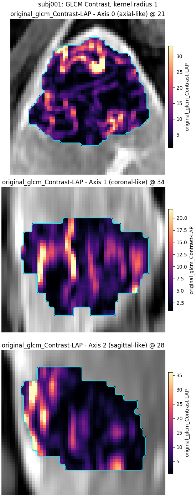
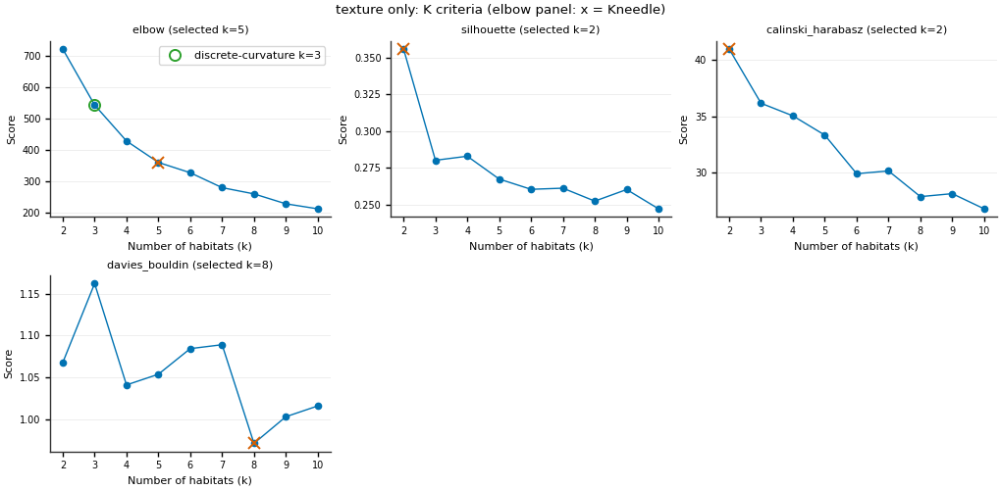
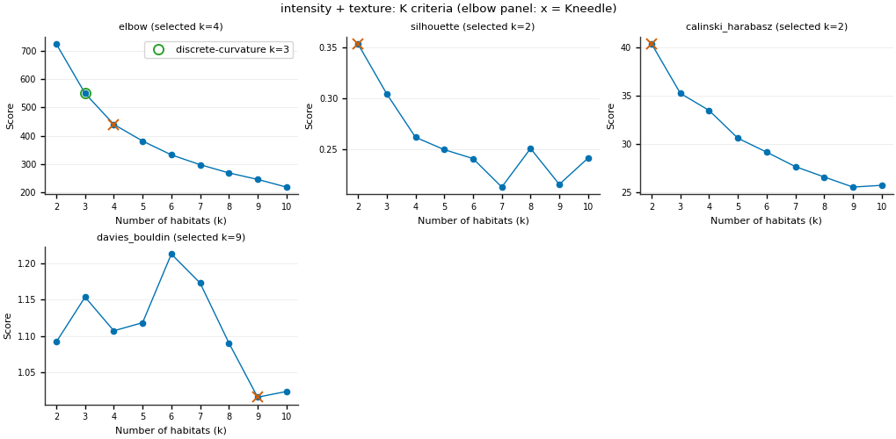
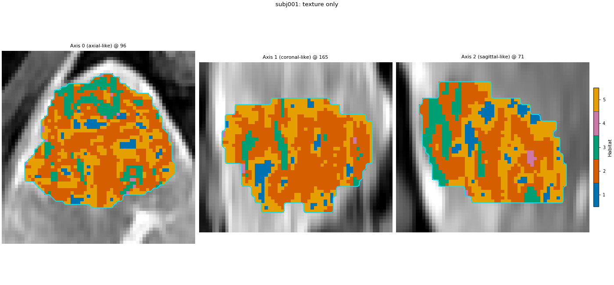
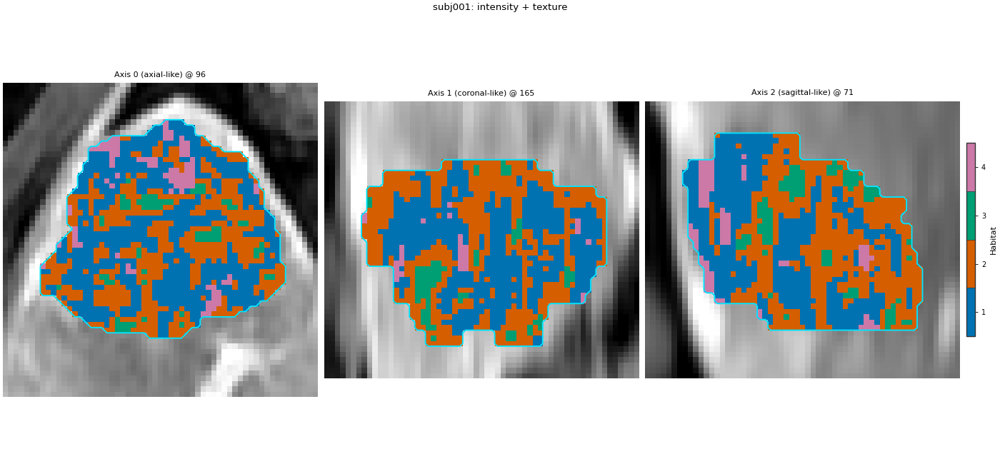
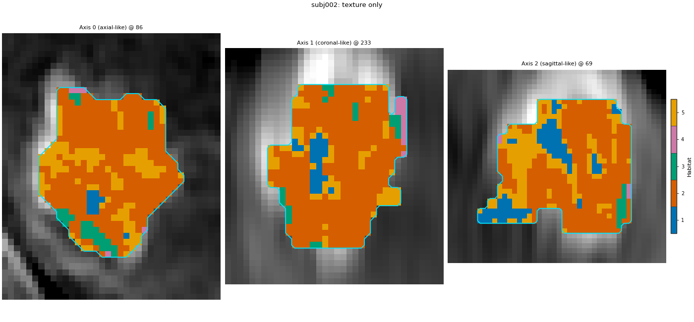
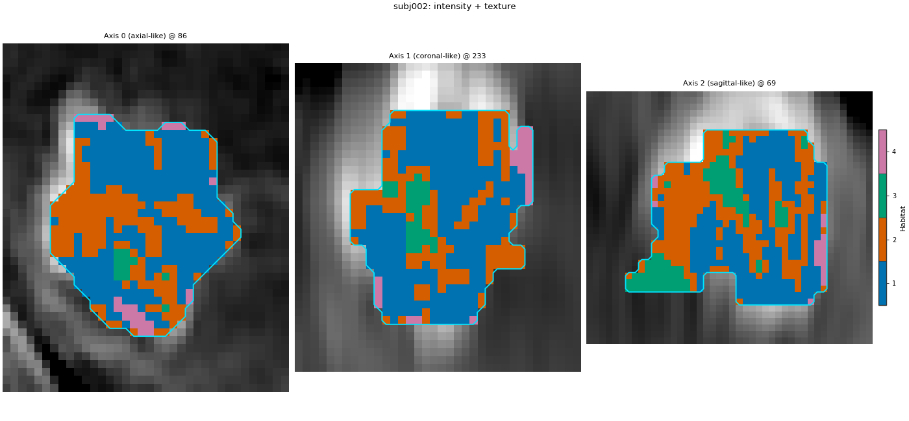

备注
Go to the end 以下载完整示例代码。
纹理特征图：单独与联合强度#
背景。 肿瘤两区平均亮度可相同但局部模式不同：一平滑、一斑点。强度 alone 无法区分。体素级纹理为每体素给出描述小邻域的数，可替代或并列于生境模型聚类的特征表强度列。
目的。 在动脉期（LAP）图像每个体素周围计算两个 GLCM 纹理图（Contrast 与 Idm），对两列纹理各运行一次两步法分析，再对仅纹理与 LAP 强度加相同纹理各运行一次；比较两运行的肘部规则选 habitat 数、质心及生境图一致度（调整 Rand 指数，忽略 id 编号）。
何时使用。 你预期生境在局部结构上有差异（例如异质性强化或细小坏死），而不仅是亮度不同，并且想知道强度列对生境改变多少。体素级纹理的提取比原始强度更慢。
分析定义。 批准两步法定义，LAP 为唯一图像；两运行间 仅 extract 阶段特征集不同（仅纹理 vs 强度+纹理）。受试者级 winsorize + z-score、30 k-means 超体素、队列级 10-bin 分箱、k-means 2..10 生境 elbow、最近质心分配与 seed 两运行相同。均在 subj001 + subj002 上拟合。本页 quantify 阶段裁为 volume 以加速。
关键术语。 完整定义见 概念 。
体素级 GLCM —— 在每个体素周围的小立方体内计算的灰度共生矩阵； Contrast 在邻域灰度差异大时偏高， Idm （逆差分矩）在邻域均匀时偏高。
kernel radius — 该立方体边长的一半：radius 1 表示 3 x 3 x 3 邻域。
bin width — 计数 GLCM 前灰度离散化，单位为图像自身强度单位。
concat 提取器 — 多个体素特征提取器在同一 ROI 上运行，列并排放置，每行一体素。
adjusted Rand index (ARI) — 同一体素两标签图的一致性：1 = 同一划分（id 名无关），约 0 = 不优于随机。
纹理参数是方法的一部分：应随结果一起报告它们。
加载队列#
仅加载动脉期：强度列与纹理列都在其上计算。由两名受试者定义生境。sphinx_gallery_thumbnail_number = 1
from pathlib import Path
import matplotlib.pyplot as plt
import numpy as np
import pandas as pd
from sklearn.metrics import adjusted_rand_score
from habit.contracts import HabitatModel, HabitatMap, cohort_from_directory
from habit.datasets import fetch_demo
from habit.execution import backend_from_policy
from habit.recipes import Study
from habit.spec import HabitatSpec, Spec, Stage
from habit.spec.policy import RunPolicy
from habit.viz import (
plot_cluster_validation_from_report,
plot_habitat_overlay,
plot_voxel_texture_slice,
)
from habit.voxel_features import build_voxel_extractor
# Change DATA / MODALITIES / ROI to your preprocessed layout.
DATA = fetch_demo()
MODALITIES = ("LAP",)
ROI = "LAP"
cohort = cohort_from_directory(DATA, modalities=MODALITIES, roi=ROI)
train = cohort[:2]
print(train)
Path("out").mkdir(exist_ok=True)
HABIT demo data (cached)
DATA (preprocessed root): C:\Users\dongm\.habit_data\demo-data-v1\preprocessed
On-disk inventory of this folder:
subjects (5): subj001, subj002, subj003, subj004, subj005
image series: LAP, PVP, delay_3min, pre_contrast
mask keys: LAP, PVP, delay_3min, pre_contrast
example image: images/subj001/delay_3min/WATER__BH_Ax_LAVA_Flex_3min_Series0012.nrrd
example mask: masks/subj001/delay_3min/WATER__BH_Ax_LAVA_Flex_10min_Series0017_mask.nrrd
Your own data must use the same folder tree (change IDs / series names):
DATA/
images/<subject_id>/<modality>/<one image file>
masks/<subject_id>/<roi>/<one mask file>
Then load it with the same call the demos use:
cohort = cohort_from_directory(DATA, modalities=("LAP",), roi="LAP")
Swap DATA / modalities / roi to match your tree. Mask key is often the
same as one image series (here LAP).
Cohort(2 subjects [subj001, subj002])
两套特征#
TEXTURE 保存两次运行共享的逐体素 GLCM 设置，故纹理列计算方式完全相同：
kernel_radius=1—— 每个体素周围的 3 x 3 x 3 立方体。更大的半径会使地图更平滑，但耗时更多；半径为 1 可以保持此页面运行快速。binWidth=25— 计数共现矩阵前强度按 25 单位宽分 bin。单位为图像单位（原始 MR），故同一binWidth在更亮/更暗扫描上灰度级数不同。这是 IBSI 离散化选择（固定 bin 宽 vs 固定 bin 数）：按数据选择并报告。
两 extract spec 唯一差别是否在前添加 raw LAP 强度列。
TEXTURE = {
"modalities": list(MODALITIES),
"kernel_radius": 1,
# One (or a few) features from every texture family the voxel-radiomics
# extractor supports. Families, not every IBSI name: enough to show
# the route without making this page a full IBSI dump.
"params": {
"setting": {"binWidth": 25},
"featureClass": {
"glcm": ["Contrast", "Idm", "Correlation", "JointEntropy"],
"glrlm": ["ShortRunEmphasis", "LongRunEmphasis", "RunEntropy"],
"glszm": ["SmallAreaEmphasis", "LargeAreaEmphasis", "ZoneEntropy"],
"gldm": ["SmallDependenceEmphasis", "LargeDependenceEmphasis"],
"ngtdm": ["Coarseness", "Contrast", "Busyness"],
},
},
}
# Texture only: two columns per voxel (GLCM Contrast, GLCM Idm).
EXTRACT_TEXTURE = Spec("voxel_radiomics", {**TEXTURE, "roi": ROI})
# Intensity + texture: the LAP intensity column, then the same two
# texture columns, side by side (one row per voxel).
EXTRACT_BOTH = Spec(
"concat",
{
"extractors": [
{"name": "raw", "params": {"modalities": list(MODALITIES)}},
{"name": "voxel_radiomics", "params": TEXTURE},
],
"roi": ROI,
},
)
def texture_spec(name: str, extract: Spec) -> HabitatSpec:
"""
Build the two-step spec used by both runs, with a given extract stage.
Args:
name: Name of the analysis (stored in the model and manifest).
extract: The ``extract`` component; the only thing that differs
between the two runs on this page.
Returns:
A :class:`~habit.spec.HabitatSpec` whose every other stage is the
approved two-step definition.
"""
return HabitatSpec(
name=name,
stages=(
Stage("extract", extract),
# preprocess (subject-level): clip each column to that patient's
# own 1st..99th percentile.
Stage("preprocess", Spec("winsorize", {"winsor_limits": [0.01, 0.01]})),
# preprocess2 (subject-level): rescale each column to 0..1 with
# that patient's own min and max. Intensity (hundreds), Contrast
# (can be much larger) and Idm (0..1) have different units;
# k-means uses Euclidean distance, so without this step the
# widest column would decide the habitats alone.
Stage("preprocess2", Spec("zscore")),
# partition: 30 supervoxels per tumour, on all extracted columns.
Stage("partition", Spec("kmeans", {"n_supervoxels": 30})),
# pool: stack both training subjects' supervoxels.
Stage("pool", Spec("pool")),
# preprocess_cohort (cohort-level): 10 equal-width bins per
# column, edges learned on the pooled training supervoxels.
# fit: one k-means for the cohort, 2..10 habitats, elbow rule.
Stage(
"fit",
Spec(
"kmeans",
{"min_habitats": 2, "max_habitats": 10, "validation": "elbow", "n_init": 10},
),
),
# assign: nearest centroid for every supervoxel, then its voxels.
Stage("assign", Spec("nearest_centroid")),
# quantify: volume fractions only on this page.
Stage("volume", Spec("volume")),
),
random_seed=0,
)
spec_texture = texture_spec("texture_only_two_step", EXTRACT_TEXTURE)
spec_both = texture_spec("intensity_texture_two_step", EXTRACT_BOTH)
查看一张纹理图#
拟合前，只构建 extract 组件并在第一名受试者上调用。结果是模型将看到的体素级表：每个 ROI 体素一行、每个特征一列。列名携带特征名及其所计算的模态。
subject = train[0]
field = build_voxel_extractor(EXTRACT_BOTH)(subject)
print(f"{field.values.shape[0]} voxels, columns: {list(field.feature_names)}")
print(field.feature_frame().describe().round(3))
contrast_name = next(name for name in field.feature_names if "Contrast" in name)
fig = plot_voxel_texture_slice(
field,
feature=contrast_name,
anatomy=subject.image("LAP"),
roi_mask=subject.mask(ROI),
title=f"{subject.subject_id}: GLCM Contrast, kernel radius 1",
crop_to="roi",
)
fig.savefig("out/texture_maps_contrast.png", dpi=150, bbox_inches="tight")
plt.show()

voxel_radiomics: glcm batch 1/35 0.690s peak=1MiB
voxel_radiomics: glcm batch 2/35 0.018s peak=2MiB
voxel_radiomics: glcm batch 3/35 0.018s peak=3MiB
voxel_radiomics: glcm batch 4/35 0.018s peak=4MiB
voxel_radiomics: glcm batch 5/35 0.016s peak=4MiB
voxel_radiomics: glcm batch 6/35 0.017s peak=5MiB
voxel_radiomics: glcm batch 7/35 0.017s peak=6MiB
voxel_radiomics: glcm batch 8/35 0.019s peak=7MiB
voxel_radiomics: glcm batch 9/35 0.017s peak=8MiB
voxel_radiomics: glcm batch 10/35 0.017s peak=9MiB
voxel_radiomics: glcm batch 11/35 0.016s peak=10MiB
voxel_radiomics: glcm batch 12/35 0.017s peak=11MiB
voxel_radiomics: glcm batch 13/35 0.017s peak=12MiB
voxel_radiomics: glcm batch 14/35 0.019s peak=13MiB
voxel_radiomics: glcm batch 15/35 0.018s peak=13MiB
voxel_radiomics: glcm batch 16/35 0.016s peak=14MiB
voxel_radiomics: glcm batch 17/35 0.018s peak=15MiB
voxel_radiomics: glcm batch 18/35 0.017s peak=16MiB
voxel_radiomics: glcm batch 19/35 0.017s peak=17MiB
voxel_radiomics: glcm batch 20/35 0.016s peak=18MiB
voxel_radiomics: glcm batch 21/35 0.017s peak=19MiB
voxel_radiomics: glcm batch 22/35 0.017s peak=20MiB
voxel_radiomics: glcm batch 23/35 0.015s peak=21MiB
voxel_radiomics: glcm batch 24/35 0.017s peak=22MiB
voxel_radiomics: glcm batch 25/35 0.016s peak=22MiB
voxel_radiomics: glcm batch 26/35 0.015s peak=23MiB
voxel_radiomics: glcm batch 27/35 0.015s peak=24MiB
voxel_radiomics: glcm batch 28/35 0.017s peak=25MiB
voxel_radiomics: glcm batch 29/35 0.016s peak=26MiB
voxel_radiomics: glcm batch 30/35 0.016s peak=27MiB
voxel_radiomics: glcm batch 31/35 0.016s peak=28MiB
voxel_radiomics: glcm batch 32/35 0.015s peak=29MiB
voxel_radiomics: glcm batch 33/35 0.014s peak=30MiB
voxel_radiomics: glcm batch 34/35 0.016s peak=31MiB
voxel_radiomics: glcm batch 35/35 0.015s peak=31MiB
voxel_radiomics: glrlm batch 1/35 0.084s peak=32MiB
voxel_radiomics: glrlm batch 2/35 0.016s peak=33MiB
voxel_radiomics: glrlm batch 3/35 0.017s peak=34MiB
voxel_radiomics: glrlm batch 4/35 0.016s peak=35MiB
voxel_radiomics: glrlm batch 5/35 0.016s peak=36MiB
voxel_radiomics: glrlm batch 6/35 0.016s peak=37MiB
voxel_radiomics: glrlm batch 7/35 0.017s peak=38MiB
voxel_radiomics: glrlm batch 8/35 0.015s peak=39MiB
voxel_radiomics: glrlm batch 9/35 0.016s peak=40MiB
voxel_radiomics: glrlm batch 10/35 0.015s peak=40MiB
voxel_radiomics: glrlm batch 11/35 0.017s peak=41MiB
voxel_radiomics: glrlm batch 12/35 0.016s peak=42MiB
voxel_radiomics: glrlm batch 13/35 0.015s peak=43MiB
voxel_radiomics: glrlm batch 14/35 0.016s peak=44MiB
voxel_radiomics: glrlm batch 15/35 0.016s peak=45MiB
voxel_radiomics: glrlm batch 16/35 0.016s peak=46MiB
voxel_radiomics: glrlm batch 17/35 0.017s peak=47MiB
voxel_radiomics: glrlm batch 18/35 0.016s peak=48MiB
voxel_radiomics: glrlm batch 19/35 0.016s peak=49MiB
voxel_radiomics: glrlm batch 20/35 0.016s peak=49MiB
voxel_radiomics: glrlm batch 21/35 0.017s peak=50MiB
voxel_radiomics: glrlm batch 22/35 0.016s peak=51MiB
voxel_radiomics: glrlm batch 23/35 0.017s peak=52MiB
voxel_radiomics: glrlm batch 24/35 0.016s peak=53MiB
voxel_radiomics: glrlm batch 25/35 0.015s peak=54MiB
voxel_radiomics: glrlm batch 26/35 0.015s peak=55MiB
voxel_radiomics: glrlm batch 27/35 0.015s peak=56MiB
voxel_radiomics: glrlm batch 28/35 0.015s peak=57MiB
voxel_radiomics: glrlm batch 29/35 0.015s peak=58MiB
voxel_radiomics: glrlm batch 30/35 0.017s peak=1MiB
voxel_radiomics: glrlm batch 31/35 0.016s peak=2MiB
voxel_radiomics: glrlm batch 32/35 0.019s peak=3MiB
voxel_radiomics: glrlm batch 33/35 0.015s peak=4MiB
voxel_radiomics: glrlm batch 34/35 0.014s peak=4MiB
voxel_radiomics: glrlm batch 35/35 0.013s peak=5MiB
voxel_radiomics: glszm batch 1/35 0.037s peak=6MiB
voxel_radiomics: glszm batch 2/35 0.014s peak=7MiB
voxel_radiomics: glszm batch 3/35 0.013s peak=8MiB
voxel_radiomics: glszm batch 4/35 0.013s peak=9MiB
voxel_radiomics: glszm batch 5/35 0.014s peak=10MiB
voxel_radiomics: glszm batch 6/35 0.014s peak=11MiB
voxel_radiomics: glszm batch 7/35 0.013s peak=12MiB
voxel_radiomics: glszm batch 8/35 0.014s peak=13MiB
voxel_radiomics: glszm batch 9/35 0.015s peak=14MiB
voxel_radiomics: glszm batch 10/35 0.014s peak=14MiB
voxel_radiomics: glszm batch 11/35 0.013s peak=15MiB
voxel_radiomics: glszm batch 12/35 0.014s peak=16MiB
voxel_radiomics: glszm batch 13/35 0.013s peak=17MiB
voxel_radiomics: glszm batch 14/35 0.014s peak=18MiB
voxel_radiomics: glszm batch 15/35 0.014s peak=19MiB
voxel_radiomics: glszm batch 16/35 0.013s peak=20MiB
voxel_radiomics: glszm batch 17/35 0.014s peak=21MiB
voxel_radiomics: glszm batch 18/35 0.013s peak=22MiB
voxel_radiomics: glszm batch 19/35 0.013s peak=23MiB
voxel_radiomics: glszm batch 20/35 0.013s peak=23MiB
voxel_radiomics: glszm batch 21/35 0.013s peak=24MiB
voxel_radiomics: glszm batch 22/35 0.014s peak=25MiB
voxel_radiomics: glszm batch 23/35 0.014s peak=26MiB
voxel_radiomics: glszm batch 24/35 0.015s peak=27MiB
voxel_radiomics: glszm batch 25/35 0.013s peak=28MiB
voxel_radiomics: glszm batch 26/35 0.014s peak=29MiB
voxel_radiomics: glszm batch 27/35 0.015s peak=30MiB
voxel_radiomics: glszm batch 28/35 0.013s peak=31MiB
voxel_radiomics: glszm batch 29/35 0.015s peak=32MiB
voxel_radiomics: glszm batch 30/35 0.015s peak=32MiB
voxel_radiomics: glszm batch 31/35 0.014s peak=33MiB
voxel_radiomics: glszm batch 32/35 0.013s peak=34MiB
voxel_radiomics: glszm batch 33/35 0.014s peak=35MiB
voxel_radiomics: glszm batch 34/35 0.015s peak=36MiB
voxel_radiomics: glszm batch 35/35 0.013s peak=37MiB
voxel_radiomics: gldm batch 1/35 0.009s peak=43MiB
voxel_radiomics: gldm batch 2/35 0.006s peak=44MiB
voxel_radiomics: gldm batch 3/35 0.007s peak=46MiB
voxel_radiomics: gldm batch 4/35 0.007s peak=46MiB
voxel_radiomics: gldm batch 5/35 0.007s peak=47MiB
voxel_radiomics: gldm batch 6/35 0.006s peak=48MiB
voxel_radiomics: gldm batch 7/35 0.007s peak=48MiB
voxel_radiomics: gldm batch 8/35 0.007s peak=50MiB
voxel_radiomics: gldm batch 9/35 0.006s peak=51MiB
voxel_radiomics: gldm batch 10/35 0.006s peak=52MiB
voxel_radiomics: gldm batch 11/35 0.007s peak=53MiB
voxel_radiomics: gldm batch 12/35 0.007s peak=54MiB
voxel_radiomics: gldm batch 13/35 0.007s peak=55MiB
voxel_radiomics: gldm batch 14/35 0.007s peak=56MiB
voxel_radiomics: gldm batch 15/35 0.007s peak=59MiB
voxel_radiomics: gldm batch 16/35 0.007s peak=58MiB
voxel_radiomics: gldm batch 17/35 0.007s peak=60MiB
voxel_radiomics: gldm batch 18/35 0.006s peak=60MiB
voxel_radiomics: gldm batch 19/35 0.007s peak=62MiB
voxel_radiomics: gldm batch 20/35 0.006s peak=62MiB
voxel_radiomics: gldm batch 21/35 0.006s peak=63MiB
voxel_radiomics: gldm batch 22/35 0.006s peak=64MiB
voxel_radiomics: gldm batch 23/35 0.006s peak=64MiB
voxel_radiomics: gldm batch 24/35 0.007s peak=8MiB
voxel_radiomics: gldm batch 25/35 0.007s peak=9MiB
voxel_radiomics: gldm batch 26/35 0.006s peak=10MiB
voxel_radiomics: gldm batch 27/35 0.006s peak=10MiB
voxel_radiomics: gldm batch 28/35 0.006s peak=12MiB
voxel_radiomics: gldm batch 29/35 0.006s peak=12MiB
voxel_radiomics: gldm batch 30/35 0.007s peak=12MiB
voxel_radiomics: gldm batch 31/35 0.007s peak=13MiB
voxel_radiomics: gldm batch 32/35 0.006s peak=14MiB
voxel_radiomics: gldm batch 33/35 0.006s peak=15MiB
voxel_radiomics: gldm batch 34/35 0.007s peak=16MiB
voxel_radiomics: gldm batch 35/35 0.007s peak=15MiB
voxel_radiomics: ngtdm batch 1/35 0.019s peak=13MiB
voxel_radiomics: ngtdm batch 2/35 0.008s peak=14MiB
voxel_radiomics: ngtdm batch 3/35 0.008s peak=15MiB
voxel_radiomics: ngtdm batch 4/35 0.008s peak=16MiB
voxel_radiomics: ngtdm batch 5/35 0.008s peak=17MiB
voxel_radiomics: ngtdm batch 6/35 0.009s peak=18MiB
voxel_radiomics: ngtdm batch 7/35 0.008s peak=19MiB
voxel_radiomics: ngtdm batch 8/35 0.008s peak=20MiB
voxel_radiomics: ngtdm batch 9/35 0.008s peak=21MiB
voxel_radiomics: ngtdm batch 10/35 0.008s peak=21MiB
voxel_radiomics: ngtdm batch 11/35 0.008s peak=22MiB
voxel_radiomics: ngtdm batch 12/35 0.008s peak=23MiB
voxel_radiomics: ngtdm batch 13/35 0.009s peak=24MiB
voxel_radiomics: ngtdm batch 14/35 0.007s peak=25MiB
voxel_radiomics: ngtdm batch 15/35 0.008s peak=26MiB
voxel_radiomics: ngtdm batch 16/35 0.008s peak=27MiB
voxel_radiomics: ngtdm batch 17/35 0.008s peak=28MiB
voxel_radiomics: ngtdm batch 18/35 0.008s peak=29MiB
voxel_radiomics: ngtdm batch 19/35 0.008s peak=29MiB
voxel_radiomics: ngtdm batch 20/35 0.007s peak=30MiB
voxel_radiomics: ngtdm batch 21/35 0.008s peak=31MiB
voxel_radiomics: ngtdm batch 22/35 0.008s peak=32MiB
voxel_radiomics: ngtdm batch 23/35 0.008s peak=33MiB
voxel_radiomics: ngtdm batch 24/35 0.008s peak=34MiB
voxel_radiomics: ngtdm batch 25/35 0.008s peak=35MiB
voxel_radiomics: ngtdm batch 26/35 0.008s peak=36MiB
voxel_radiomics: ngtdm batch 27/35 0.007s peak=37MiB
voxel_radiomics: ngtdm batch 28/35 0.009s peak=38MiB
voxel_radiomics: ngtdm batch 29/35 0.008s peak=39MiB
voxel_radiomics: ngtdm batch 30/35 0.008s peak=39MiB
voxel_radiomics: ngtdm batch 31/35 0.008s peak=40MiB
voxel_radiomics: ngtdm batch 32/35 0.008s peak=41MiB
voxel_radiomics: ngtdm batch 33/35 0.007s peak=42MiB
voxel_radiomics: ngtdm batch 34/35 0.007s peak=42MiB
voxel_radiomics: ngtdm batch 35/35 0.008s peak=43MiB
34694 voxels, columns: ['LAP', 'original_glcm_Contrast-LAP', 'original_glcm_Idm-LAP', 'original_glcm_Correlation-LAP', 'original_glcm_JointEntropy-LAP', 'original_glrlm_ShortRunEmphasis-LAP', 'original_glrlm_LongRunEmphasis-LAP', 'original_glrlm_RunEntropy-LAP', 'original_glszm_SmallAreaEmphasis-LAP', 'original_glszm_LargeAreaEmphasis-LAP', 'original_glszm_ZoneEntropy-LAP', 'original_gldm_SmallDependenceEmphasis-LAP', 'original_gldm_LargeDependenceEmphasis-LAP', 'original_ngtdm_Coarseness-LAP', 'original_ngtdm_Contrast-LAP', 'original_ngtdm_Busyness-LAP']
LAP ... original_ngtdm_Busyness-LAP
count 34694.000 ... 34694.000
mean 859.751 ... 0.063
std 161.402 ... 0.104
min 366.000 ... 0.003
25% 739.000 ... 0.033
50% 864.000 ... 0.047
75% 977.000 ... 0.071
max 1420.000 ... 13.788
[8 rows x 16 columns]
F:\work\habit_project\habit\viz\voxel_texture.py:1019: UserWarning: Display geometry conflict: image/anatomy direction does not match mask/label direction. Using the mask/label direction so coronal/sagittal superior-up follows the labelled anatomy. Pass direction= to override.
direction, spacing = resolve_display_geometry(
拟合两次运行#
相同训练受试者、相同 seed、相同阶段；仅 extract 不同。纹理列在每次 fit_predict 内计算（日志行为体素批次）。
result_texture = Study(spec_texture).fit_predict(
train,
backend=backend_from_policy(
RunPolicy(backend="serial", on_subject_failure="continue")
),
)
result_both = Study(spec_both).fit_predict(
train,
backend=backend_from_policy(
RunPolicy(backend="serial", on_subject_failure="continue")
),
)
model_texture = result_texture.habitat_model
model_both = result_both.habitat_model
print("texture only : K =", model_texture.n_habitats, "| features:", list(model_texture.feature_names))
print("intensity + texture : K =", model_both.n_habitats, "| features:", list(model_both.feature_names))
Cohort.map[_ComputeUnits]: 0%| | 0/2 [00:00<?, ?it/s]voxel_radiomics: glcm batch 1/35 0.024s peak=43MiB
voxel_radiomics: glcm batch 2/35 0.018s peak=44MiB
voxel_radiomics: glcm batch 3/35 0.018s peak=45MiB
voxel_radiomics: glcm batch 4/35 0.019s peak=46MiB
voxel_radiomics: glcm batch 5/35 0.019s peak=47MiB
voxel_radiomics: glcm batch 6/35 0.018s peak=48MiB
voxel_radiomics: glcm batch 7/35 0.018s peak=49MiB
voxel_radiomics: glcm batch 8/35 0.019s peak=50MiB
voxel_radiomics: glcm batch 9/35 0.019s peak=50MiB
voxel_radiomics: glcm batch 10/35 0.020s peak=51MiB
voxel_radiomics: glcm batch 11/35 0.017s peak=52MiB
voxel_radiomics: glcm batch 12/35 0.019s peak=53MiB
voxel_radiomics: glcm batch 13/35 0.017s peak=54MiB
voxel_radiomics: glcm batch 14/35 0.016s peak=55MiB
voxel_radiomics: glcm batch 15/35 0.015s peak=56MiB
voxel_radiomics: glcm batch 16/35 0.016s peak=57MiB
voxel_radiomics: glcm batch 17/35 0.016s peak=58MiB
voxel_radiomics: glcm batch 18/35 0.016s peak=1MiB
voxel_radiomics: glcm batch 19/35 0.015s peak=2MiB
voxel_radiomics: glcm batch 20/35 0.015s peak=3MiB
voxel_radiomics: glcm batch 21/35 0.016s peak=4MiB
voxel_radiomics: glcm batch 22/35 0.015s peak=5MiB
voxel_radiomics: glcm batch 23/35 0.015s peak=5MiB
voxel_radiomics: glcm batch 24/35 0.015s peak=6MiB
voxel_radiomics: glcm batch 25/35 0.015s peak=7MiB
voxel_radiomics: glcm batch 26/35 0.015s peak=8MiB
voxel_radiomics: glcm batch 27/35 0.015s peak=9MiB
voxel_radiomics: glcm batch 28/35 0.015s peak=10MiB
voxel_radiomics: glcm batch 29/35 0.016s peak=11MiB
voxel_radiomics: glcm batch 30/35 0.017s peak=12MiB
voxel_radiomics: glcm batch 31/35 0.015s peak=13MiB
voxel_radiomics: glcm batch 32/35 0.016s peak=14MiB
voxel_radiomics: glcm batch 33/35 0.015s peak=14MiB
voxel_radiomics: glcm batch 34/35 0.015s peak=15MiB
voxel_radiomics: glcm batch 35/35 0.016s peak=16MiB
voxel_radiomics: glrlm batch 1/35 0.015s peak=17MiB
voxel_radiomics: glrlm batch 2/35 0.015s peak=18MiB
voxel_radiomics: glrlm batch 3/35 0.017s peak=19MiB
voxel_radiomics: glrlm batch 4/35 0.015s peak=20MiB
voxel_radiomics: glrlm batch 5/35 0.016s peak=21MiB
voxel_radiomics: glrlm batch 6/35 0.014s peak=22MiB
voxel_radiomics: glrlm batch 7/35 0.014s peak=23MiB
voxel_radiomics: glrlm batch 8/35 0.016s peak=23MiB
voxel_radiomics: glrlm batch 9/35 0.042s peak=24MiB
voxel_radiomics: glrlm batch 10/35 0.033s peak=25MiB
voxel_radiomics: glrlm batch 11/35 0.044s peak=26MiB
voxel_radiomics: glrlm batch 12/35 0.019s peak=27MiB
voxel_radiomics: glrlm batch 13/35 0.017s peak=28MiB
voxel_radiomics: glrlm batch 14/35 0.024s peak=29MiB
voxel_radiomics: glrlm batch 15/35 0.018s peak=30MiB
voxel_radiomics: glrlm batch 16/35 0.016s peak=31MiB
voxel_radiomics: glrlm batch 17/35 0.015s peak=32MiB
voxel_radiomics: glrlm batch 18/35 0.016s peak=32MiB
voxel_radiomics: glrlm batch 19/35 0.015s peak=33MiB
voxel_radiomics: glrlm batch 20/35 0.015s peak=34MiB
voxel_radiomics: glrlm batch 21/35 0.015s peak=35MiB
voxel_radiomics: glrlm batch 22/35 0.014s peak=36MiB
voxel_radiomics: glrlm batch 23/35 0.015s peak=37MiB
voxel_radiomics: glrlm batch 24/35 0.015s peak=38MiB
voxel_radiomics: glrlm batch 25/35 0.015s peak=39MiB
voxel_radiomics: glrlm batch 26/35 0.014s peak=40MiB
voxel_radiomics: glrlm batch 27/35 0.014s peak=41MiB
voxel_radiomics: glrlm batch 28/35 0.014s peak=41MiB
voxel_radiomics: glrlm batch 29/35 0.014s peak=42MiB
voxel_radiomics: glrlm batch 30/35 0.015s peak=43MiB
voxel_radiomics: glrlm batch 31/35 0.014s peak=44MiB
voxel_radiomics: glrlm batch 32/35 0.014s peak=45MiB
voxel_radiomics: glrlm batch 33/35 0.015s peak=46MiB
voxel_radiomics: glrlm batch 34/35 0.015s peak=47MiB
voxel_radiomics: glrlm batch 35/35 0.013s peak=48MiB
voxel_radiomics: glszm batch 1/35 0.014s peak=49MiB
voxel_radiomics: glszm batch 2/35 0.013s peak=50MiB
voxel_radiomics: glszm batch 3/35 0.016s peak=50MiB
voxel_radiomics: glszm batch 4/35 0.015s peak=51MiB
voxel_radiomics: glszm batch 5/35 0.013s peak=52MiB
voxel_radiomics: glszm batch 6/35 0.014s peak=53MiB
voxel_radiomics: glszm batch 7/35 0.013s peak=54MiB
voxel_radiomics: glszm batch 8/35 0.013s peak=55MiB
voxel_radiomics: glszm batch 9/35 0.014s peak=56MiB
voxel_radiomics: glszm batch 10/35 0.013s peak=57MiB
voxel_radiomics: glszm batch 11/35 0.014s peak=58MiB
voxel_radiomics: glszm batch 12/35 0.014s peak=1MiB
voxel_radiomics: glszm batch 13/35 0.014s peak=2MiB
voxel_radiomics: glszm batch 14/35 0.013s peak=3MiB
voxel_radiomics: glszm batch 15/35 0.013s peak=4MiB
voxel_radiomics: glszm batch 16/35 0.013s peak=5MiB
voxel_radiomics: glszm batch 17/35 0.013s peak=5MiB
voxel_radiomics: glszm batch 18/35 0.014s peak=6MiB
voxel_radiomics: glszm batch 19/35 0.014s peak=7MiB
voxel_radiomics: glszm batch 20/35 0.015s peak=8MiB
voxel_radiomics: glszm batch 21/35 0.014s peak=9MiB
voxel_radiomics: glszm batch 22/35 0.013s peak=10MiB
voxel_radiomics: glszm batch 23/35 0.013s peak=11MiB
voxel_radiomics: glszm batch 24/35 0.013s peak=12MiB
voxel_radiomics: glszm batch 25/35 0.013s peak=13MiB
voxel_radiomics: glszm batch 26/35 0.013s peak=14MiB
voxel_radiomics: glszm batch 27/35 0.014s peak=14MiB
voxel_radiomics: glszm batch 28/35 0.013s peak=15MiB
voxel_radiomics: glszm batch 29/35 0.013s peak=16MiB
voxel_radiomics: glszm batch 30/35 0.014s peak=17MiB
voxel_radiomics: glszm batch 31/35 0.013s peak=18MiB
voxel_radiomics: glszm batch 32/35 0.014s peak=19MiB
voxel_radiomics: glszm batch 33/35 0.014s peak=20MiB
voxel_radiomics: glszm batch 34/35 0.014s peak=21MiB
voxel_radiomics: glszm batch 35/35 0.014s peak=22MiB
voxel_radiomics: gldm batch 1/35 0.007s peak=27MiB
voxel_radiomics: gldm batch 2/35 0.006s peak=29MiB
voxel_radiomics: gldm batch 3/35 0.006s peak=30MiB
voxel_radiomics: gldm batch 4/35 0.006s peak=31MiB
voxel_radiomics: gldm batch 5/35 0.006s peak=32MiB
voxel_radiomics: gldm batch 6/35 0.006s peak=33MiB
voxel_radiomics: gldm batch 7/35 0.006s peak=33MiB
voxel_radiomics: gldm batch 8/35 0.006s peak=35MiB
voxel_radiomics: gldm batch 9/35 0.006s peak=36MiB
voxel_radiomics: gldm batch 10/35 0.006s peak=36MiB
voxel_radiomics: gldm batch 11/35 0.006s peak=37MiB
voxel_radiomics: gldm batch 12/35 0.006s peak=38MiB
voxel_radiomics: gldm batch 13/35 0.006s peak=40MiB
voxel_radiomics: gldm batch 14/35 0.006s peak=41MiB
voxel_radiomics: gldm batch 15/35 0.007s peak=44MiB
voxel_radiomics: gldm batch 16/35 0.006s peak=43MiB
voxel_radiomics: gldm batch 17/35 0.006s peak=44MiB
voxel_radiomics: gldm batch 18/35 0.005s peak=45MiB
voxel_radiomics: gldm batch 19/35 0.006s peak=46MiB
voxel_radiomics: gldm batch 20/35 0.006s peak=47MiB
voxel_radiomics: gldm batch 21/35 0.006s peak=48MiB
voxel_radiomics: gldm batch 22/35 0.007s peak=48MiB
voxel_radiomics: gldm batch 23/35 0.006s peak=49MiB
voxel_radiomics: gldm batch 24/35 0.006s peak=50MiB
voxel_radiomics: gldm batch 25/35 0.006s peak=51MiB
voxel_radiomics: gldm batch 26/35 0.006s peak=52MiB
voxel_radiomics: gldm batch 27/35 0.006s peak=52MiB
voxel_radiomics: gldm batch 28/35 0.006s peak=54MiB
voxel_radiomics: gldm batch 29/35 0.006s peak=54MiB
voxel_radiomics: gldm batch 30/35 0.006s peak=54MiB
voxel_radiomics: gldm batch 31/35 0.007s peak=55MiB
voxel_radiomics: gldm batch 32/35 0.008s peak=56MiB
voxel_radiomics: gldm batch 33/35 0.008s peak=58MiB
voxel_radiomics: gldm batch 34/35 0.006s peak=59MiB
voxel_radiomics: gldm batch 35/35 0.006s peak=57MiB
voxel_radiomics: ngtdm batch 1/35 0.007s peak=55MiB
voxel_radiomics: ngtdm batch 2/35 0.007s peak=56MiB
voxel_radiomics: ngtdm batch 3/35 0.007s peak=57MiB
voxel_radiomics: ngtdm batch 4/35 0.007s peak=58MiB
voxel_radiomics: ngtdm batch 5/35 0.007s peak=59MiB
voxel_radiomics: ngtdm batch 6/35 0.008s peak=3MiB
voxel_radiomics: ngtdm batch 7/35 0.007s peak=3MiB
voxel_radiomics: ngtdm batch 8/35 0.008s peak=4MiB
voxel_radiomics: ngtdm batch 9/35 0.008s peak=5MiB
voxel_radiomics: ngtdm batch 10/35 0.007s peak=6MiB
voxel_radiomics: ngtdm batch 11/35 0.008s peak=7MiB
voxel_radiomics: ngtdm batch 12/35 0.007s peak=8MiB
voxel_radiomics: ngtdm batch 13/35 0.007s peak=9MiB
voxel_radiomics: ngtdm batch 14/35 0.007s peak=10MiB
voxel_radiomics: ngtdm batch 15/35 0.007s peak=11MiB
voxel_radiomics: ngtdm batch 16/35 0.008s peak=12MiB
voxel_radiomics: ngtdm batch 17/35 0.007s peak=12MiB
voxel_radiomics: ngtdm batch 18/35 0.008s peak=13MiB
voxel_radiomics: ngtdm batch 19/35 0.008s peak=14MiB
voxel_radiomics: ngtdm batch 20/35 0.008s peak=15MiB
voxel_radiomics: ngtdm batch 21/35 0.008s peak=16MiB
voxel_radiomics: ngtdm batch 22/35 0.007s peak=17MiB
voxel_radiomics: ngtdm batch 23/35 0.008s peak=18MiB
voxel_radiomics: ngtdm batch 24/35 0.008s peak=19MiB
voxel_radiomics: ngtdm batch 25/35 0.008s peak=20MiB
voxel_radiomics: ngtdm batch 26/35 0.008s peak=21MiB
voxel_radiomics: ngtdm batch 27/35 0.008s peak=21MiB
voxel_radiomics: ngtdm batch 28/35 0.007s peak=23MiB
voxel_radiomics: ngtdm batch 29/35 0.009s peak=23MiB
voxel_radiomics: ngtdm batch 30/35 0.010s peak=24MiB
voxel_radiomics: ngtdm batch 31/35 0.008s peak=25MiB
voxel_radiomics: ngtdm batch 32/35 0.009s peak=26MiB
voxel_radiomics: ngtdm batch 33/35 0.007s peak=26MiB
voxel_radiomics: ngtdm batch 34/35 0.007s peak=27MiB
voxel_radiomics: ngtdm batch 35/35 0.007s peak=28MiB
Cohort.map[_ComputeUnits]: 50%|█████ | 1/2 [00:05<00:05, 5.33s/it]voxel_radiomics: glcm batch 1/10 0.125s peak=27MiB
voxel_radiomics: glcm batch 2/10 0.017s peak=28MiB
voxel_radiomics: glcm batch 3/10 0.018s peak=28MiB
voxel_radiomics: glcm batch 4/10 0.018s peak=28MiB
voxel_radiomics: glcm batch 5/10 0.016s peak=28MiB
voxel_radiomics: glcm batch 6/10 0.018s peak=29MiB
voxel_radiomics: glcm batch 7/10 0.016s peak=29MiB
voxel_radiomics: glcm batch 8/10 0.018s peak=29MiB
voxel_radiomics: glcm batch 9/10 0.016s peak=29MiB
voxel_radiomics: glcm batch 10/10 0.015s peak=30MiB
voxel_radiomics: glrlm batch 1/10 0.016s peak=30MiB
voxel_radiomics: glrlm batch 2/10 0.016s peak=30MiB
voxel_radiomics: glrlm batch 3/10 0.016s peak=30MiB
voxel_radiomics: glrlm batch 4/10 0.016s peak=31MiB
voxel_radiomics: glrlm batch 5/10 0.018s peak=31MiB
voxel_radiomics: glrlm batch 6/10 0.019s peak=31MiB
voxel_radiomics: glrlm batch 7/10 0.015s peak=31MiB
voxel_radiomics: glrlm batch 8/10 0.014s peak=32MiB
voxel_radiomics: glrlm batch 9/10 0.014s peak=32MiB
voxel_radiomics: glrlm batch 10/10 0.015s peak=32MiB
voxel_radiomics: glszm batch 1/10 0.013s peak=32MiB
voxel_radiomics: glszm batch 2/10 0.012s peak=33MiB
voxel_radiomics: glszm batch 3/10 0.012s peak=33MiB
voxel_radiomics: glszm batch 4/10 0.013s peak=33MiB
voxel_radiomics: glszm batch 5/10 0.013s peak=33MiB
voxel_radiomics: glszm batch 6/10 0.013s peak=34MiB
voxel_radiomics: glszm batch 7/10 0.013s peak=34MiB
voxel_radiomics: glszm batch 8/10 0.012s peak=34MiB
voxel_radiomics: glszm batch 9/10 0.012s peak=34MiB
voxel_radiomics: glszm batch 10/10 0.012s peak=35MiB
voxel_radiomics: gldm batch 1/10 0.006s peak=39MiB
voxel_radiomics: gldm batch 2/10 0.006s peak=41MiB
voxel_radiomics: gldm batch 3/10 0.006s peak=42MiB
voxel_radiomics: gldm batch 4/10 0.006s peak=42MiB
voxel_radiomics: gldm batch 5/10 0.007s peak=5MiB
voxel_radiomics: gldm batch 6/10 0.006s peak=5MiB
voxel_radiomics: gldm batch 7/10 0.006s peak=6MiB
voxel_radiomics: gldm batch 8/10 0.006s peak=5MiB
voxel_radiomics: gldm batch 9/10 0.006s peak=7MiB
voxel_radiomics: gldm batch 10/10 0.005s peak=7MiB
voxel_radiomics: ngtdm batch 1/10 0.008s peak=3MiB
voxel_radiomics: ngtdm batch 2/10 0.007s peak=4MiB
voxel_radiomics: ngtdm batch 3/10 0.008s peak=4MiB
voxel_radiomics: ngtdm batch 4/10 0.008s peak=4MiB
voxel_radiomics: ngtdm batch 5/10 0.008s peak=5MiB
voxel_radiomics: ngtdm batch 6/10 0.007s peak=5MiB
voxel_radiomics: ngtdm batch 7/10 0.008s peak=5MiB
voxel_radiomics: ngtdm batch 8/10 0.008s peak=5MiB
voxel_radiomics: ngtdm batch 9/10 0.007s peak=5MiB
voxel_radiomics: ngtdm batch 10/10 0.007s peak=5MiB
Cohort.map[_ComputeUnits]: 100%|██████████| 2/2 [00:07<00:00, 3.97s/it]
Cohort.map[_ComputeUnits]: 100%|██████████| 2/2 [00:07<00:00, 3.97s/it]
Cohort.map[_AssignPrecomputedUnits]: 0%| | 0/2 [00:00<?, ?it/s]
Cohort.map[_AssignPrecomputedUnits]: 50%|█████ | 1/2 [00:00<00:00, 2.76it/s]
Cohort.map[_AssignPrecomputedUnits]: 100%|██████████| 2/2 [00:00<00:00, 2.75it/s]
Cohort.map[_AssignPrecomputedUnits]: 100%|██████████| 2/2 [00:00<00:00, 2.75it/s]
Cohort.map[_ComputeUnits]: 0%| | 0/2 [00:00<?, ?it/s]voxel_radiomics: glcm batch 1/35 0.276s peak=5MiB
voxel_radiomics: glcm batch 2/35 0.016s peak=6MiB
voxel_radiomics: glcm batch 3/35 0.018s peak=7MiB
voxel_radiomics: glcm batch 4/35 0.017s peak=8MiB
voxel_radiomics: glcm batch 5/35 0.018s peak=9MiB
voxel_radiomics: glcm batch 6/35 0.016s peak=10MiB
voxel_radiomics: glcm batch 7/35 0.016s peak=10MiB
voxel_radiomics: glcm batch 8/35 0.016s peak=11MiB
voxel_radiomics: glcm batch 9/35 0.018s peak=12MiB
voxel_radiomics: glcm batch 10/35 0.016s peak=13MiB
voxel_radiomics: glcm batch 11/35 0.016s peak=14MiB
voxel_radiomics: glcm batch 12/35 0.016s peak=15MiB
voxel_radiomics: glcm batch 13/35 0.016s peak=16MiB
voxel_radiomics: glcm batch 14/35 0.015s peak=17MiB
voxel_radiomics: glcm batch 15/35 0.016s peak=18MiB
voxel_radiomics: glcm batch 16/35 0.016s peak=19MiB
voxel_radiomics: glcm batch 17/35 0.016s peak=19MiB
voxel_radiomics: glcm batch 18/35 0.016s peak=20MiB
voxel_radiomics: glcm batch 19/35 0.017s peak=21MiB
voxel_radiomics: glcm batch 20/35 0.018s peak=22MiB
voxel_radiomics: glcm batch 21/35 0.017s peak=23MiB
voxel_radiomics: glcm batch 22/35 0.017s peak=24MiB
voxel_radiomics: glcm batch 23/35 0.015s peak=25MiB
voxel_radiomics: glcm batch 24/35 0.015s peak=26MiB
voxel_radiomics: glcm batch 25/35 0.016s peak=27MiB
voxel_radiomics: glcm batch 26/35 0.017s peak=28MiB
voxel_radiomics: glcm batch 27/35 0.015s peak=28MiB
voxel_radiomics: glcm batch 28/35 0.014s peak=29MiB
voxel_radiomics: glcm batch 29/35 0.015s peak=30MiB
voxel_radiomics: glcm batch 30/35 0.015s peak=31MiB
voxel_radiomics: glcm batch 31/35 0.015s peak=32MiB
voxel_radiomics: glcm batch 32/35 0.015s peak=33MiB
voxel_radiomics: glcm batch 33/35 0.016s peak=34MiB
voxel_radiomics: glcm batch 34/35 0.016s peak=35MiB
voxel_radiomics: glcm batch 35/35 0.016s peak=36MiB
voxel_radiomics: glrlm batch 1/35 0.015s peak=37MiB
voxel_radiomics: glrlm batch 2/35 0.016s peak=37MiB
voxel_radiomics: glrlm batch 3/35 0.015s peak=38MiB
voxel_radiomics: glrlm batch 4/35 0.015s peak=39MiB
voxel_radiomics: glrlm batch 5/35 0.016s peak=40MiB
voxel_radiomics: glrlm batch 6/35 0.015s peak=41MiB
voxel_radiomics: glrlm batch 7/35 0.015s peak=42MiB
voxel_radiomics: glrlm batch 8/35 0.015s peak=43MiB
voxel_radiomics: glrlm batch 9/35 0.015s peak=44MiB
voxel_radiomics: glrlm batch 10/35 0.016s peak=45MiB
voxel_radiomics: glrlm batch 11/35 0.015s peak=45MiB
voxel_radiomics: glrlm batch 12/35 0.016s peak=46MiB
voxel_radiomics: glrlm batch 13/35 0.015s peak=47MiB
voxel_radiomics: glrlm batch 14/35 0.016s peak=1MiB
voxel_radiomics: glrlm batch 15/35 0.016s peak=2MiB
voxel_radiomics: glrlm batch 16/35 0.016s peak=3MiB
voxel_radiomics: glrlm batch 17/35 0.016s peak=4MiB
voxel_radiomics: glrlm batch 18/35 0.016s peak=5MiB
voxel_radiomics: glrlm batch 19/35 0.015s peak=5MiB
voxel_radiomics: glrlm batch 20/35 0.015s peak=6MiB
voxel_radiomics: glrlm batch 21/35 0.015s peak=7MiB
voxel_radiomics: glrlm batch 22/35 0.015s peak=8MiB
voxel_radiomics: glrlm batch 23/35 0.014s peak=9MiB
voxel_radiomics: glrlm batch 24/35 0.015s peak=10MiB
voxel_radiomics: glrlm batch 25/35 0.016s peak=11MiB
voxel_radiomics: glrlm batch 26/35 0.014s peak=12MiB
voxel_radiomics: glrlm batch 27/35 0.015s peak=13MiB
voxel_radiomics: glrlm batch 28/35 0.015s peak=14MiB
voxel_radiomics: glrlm batch 29/35 0.015s peak=14MiB
voxel_radiomics: glrlm batch 30/35 0.015s peak=15MiB
voxel_radiomics: glrlm batch 31/35 0.015s peak=16MiB
voxel_radiomics: glrlm batch 32/35 0.015s peak=17MiB
voxel_radiomics: glrlm batch 33/35 0.015s peak=18MiB
voxel_radiomics: glrlm batch 34/35 0.014s peak=19MiB
voxel_radiomics: glrlm batch 35/35 0.013s peak=20MiB
voxel_radiomics: glszm batch 1/35 0.014s peak=21MiB
voxel_radiomics: glszm batch 2/35 0.013s peak=22MiB
voxel_radiomics: glszm batch 3/35 0.013s peak=23MiB
voxel_radiomics: glszm batch 4/35 0.014s peak=23MiB
voxel_radiomics: glszm batch 5/35 0.012s peak=24MiB
voxel_radiomics: glszm batch 6/35 0.014s peak=25MiB
voxel_radiomics: glszm batch 7/35 0.013s peak=26MiB
voxel_radiomics: glszm batch 8/35 0.014s peak=27MiB
voxel_radiomics: glszm batch 9/35 0.015s peak=28MiB
voxel_radiomics: glszm batch 10/35 0.014s peak=29MiB
voxel_radiomics: glszm batch 11/35 0.014s peak=30MiB
voxel_radiomics: glszm batch 12/35 0.014s peak=31MiB
voxel_radiomics: glszm batch 13/35 0.014s peak=32MiB
voxel_radiomics: glszm batch 14/35 0.014s peak=32MiB
voxel_radiomics: glszm batch 15/35 0.014s peak=33MiB
voxel_radiomics: glszm batch 16/35 0.013s peak=34MiB
voxel_radiomics: glszm batch 17/35 0.012s peak=35MiB
voxel_radiomics: glszm batch 18/35 0.012s peak=36MiB
voxel_radiomics: glszm batch 19/35 0.012s peak=37MiB
voxel_radiomics: glszm batch 20/35 0.013s peak=38MiB
voxel_radiomics: glszm batch 21/35 0.012s peak=39MiB
voxel_radiomics: glszm batch 22/35 0.013s peak=40MiB
voxel_radiomics: glszm batch 23/35 0.013s peak=41MiB
voxel_radiomics: glszm batch 24/35 0.012s peak=41MiB
voxel_radiomics: glszm batch 25/35 0.013s peak=42MiB
voxel_radiomics: glszm batch 26/35 0.014s peak=43MiB
voxel_radiomics: glszm batch 27/35 0.014s peak=44MiB
voxel_radiomics: glszm batch 28/35 0.012s peak=45MiB
voxel_radiomics: glszm batch 29/35 0.013s peak=46MiB
voxel_radiomics: glszm batch 30/35 0.012s peak=47MiB
voxel_radiomics: glszm batch 31/35 0.013s peak=48MiB
voxel_radiomics: glszm batch 32/35 0.012s peak=49MiB
voxel_radiomics: glszm batch 33/35 0.012s peak=50MiB
voxel_radiomics: glszm batch 34/35 0.013s peak=50MiB
voxel_radiomics: glszm batch 35/35 0.012s peak=51MiB
voxel_radiomics: gldm batch 1/35 0.006s peak=57MiB
voxel_radiomics: gldm batch 2/35 0.006s peak=58MiB
voxel_radiomics: gldm batch 3/35 0.006s peak=60MiB
voxel_radiomics: gldm batch 4/35 0.006s peak=61MiB
voxel_radiomics: gldm batch 5/35 0.006s peak=62MiB
voxel_radiomics: gldm batch 6/35 0.006s peak=62MiB
voxel_radiomics: gldm batch 7/35 0.006s peak=63MiB
voxel_radiomics: gldm batch 8/35 0.007s peak=7MiB
voxel_radiomics: gldm batch 9/35 0.006s peak=8MiB
voxel_radiomics: gldm batch 10/35 0.005s peak=8MiB
voxel_radiomics: gldm batch 11/35 0.006s peak=9MiB
voxel_radiomics: gldm batch 12/35 0.006s peak=11MiB
voxel_radiomics: gldm batch 13/35 0.006s peak=12MiB
voxel_radiomics: gldm batch 14/35 0.006s peak=13MiB
voxel_radiomics: gldm batch 15/35 0.006s peak=16MiB
voxel_radiomics: gldm batch 16/35 0.006s peak=15MiB
voxel_radiomics: gldm batch 17/35 0.005s peak=16MiB
voxel_radiomics: gldm batch 18/35 0.005s peak=17MiB
voxel_radiomics: gldm batch 19/35 0.006s peak=19MiB
voxel_radiomics: gldm batch 20/35 0.006s peak=19MiB
voxel_radiomics: gldm batch 21/35 0.006s peak=20MiB
voxel_radiomics: gldm batch 22/35 0.006s peak=21MiB
voxel_radiomics: gldm batch 23/35 0.006s peak=21MiB
voxel_radiomics: gldm batch 24/35 0.006s peak=22MiB
voxel_radiomics: gldm batch 25/35 0.005s peak=23MiB
voxel_radiomics: gldm batch 26/35 0.006s peak=24MiB
voxel_radiomics: gldm batch 27/35 0.006s peak=24MiB
voxel_radiomics: gldm batch 28/35 0.006s peak=26MiB
voxel_radiomics: gldm batch 29/35 0.006s peak=26MiB
voxel_radiomics: gldm batch 30/35 0.006s peak=26MiB
voxel_radiomics: gldm batch 31/35 0.006s peak=27MiB
voxel_radiomics: gldm batch 32/35 0.006s peak=28MiB
voxel_radiomics: gldm batch 33/35 0.006s peak=30MiB
voxel_radiomics: gldm batch 34/35 0.005s peak=31MiB
voxel_radiomics: gldm batch 35/35 0.006s peak=29MiB
voxel_radiomics: ngtdm batch 1/35 0.008s peak=27MiB
voxel_radiomics: ngtdm batch 2/35 0.008s peak=28MiB
voxel_radiomics: ngtdm batch 3/35 0.007s peak=29MiB
voxel_radiomics: ngtdm batch 4/35 0.007s peak=30MiB
voxel_radiomics: ngtdm batch 5/35 0.007s peak=31MiB
voxel_radiomics: ngtdm batch 6/35 0.007s peak=32MiB
voxel_radiomics: ngtdm batch 7/35 0.007s peak=33MiB
voxel_radiomics: ngtdm batch 8/35 0.007s peak=34MiB
voxel_radiomics: ngtdm batch 9/35 0.008s peak=35MiB
voxel_radiomics: ngtdm batch 10/35 0.007s peak=36MiB
voxel_radiomics: ngtdm batch 11/35 0.007s peak=37MiB
voxel_radiomics: ngtdm batch 12/35 0.008s peak=38MiB
voxel_radiomics: ngtdm batch 13/35 0.007s peak=38MiB
voxel_radiomics: ngtdm batch 14/35 0.007s peak=39MiB
voxel_radiomics: ngtdm batch 15/35 0.007s peak=40MiB
voxel_radiomics: ngtdm batch 16/35 0.007s peak=41MiB
voxel_radiomics: ngtdm batch 17/35 0.007s peak=42MiB
voxel_radiomics: ngtdm batch 18/35 0.007s peak=43MiB
voxel_radiomics: ngtdm batch 19/35 0.007s peak=44MiB
voxel_radiomics: ngtdm batch 20/35 0.007s peak=45MiB
voxel_radiomics: ngtdm batch 21/35 0.008s peak=46MiB
voxel_radiomics: ngtdm batch 22/35 0.008s peak=47MiB
voxel_radiomics: ngtdm batch 23/35 0.007s peak=48MiB
voxel_radiomics: ngtdm batch 24/35 0.007s peak=48MiB
voxel_radiomics: ngtdm batch 25/35 0.007s peak=49MiB
voxel_radiomics: ngtdm batch 26/35 0.008s peak=50MiB
voxel_radiomics: ngtdm batch 27/35 0.007s peak=51MiB
voxel_radiomics: ngtdm batch 28/35 0.008s peak=52MiB
voxel_radiomics: ngtdm batch 29/35 0.008s peak=53MiB
voxel_radiomics: ngtdm batch 30/35 0.007s peak=54MiB
voxel_radiomics: ngtdm batch 31/35 0.007s peak=55MiB
voxel_radiomics: ngtdm batch 32/35 0.007s peak=55MiB
voxel_radiomics: ngtdm batch 33/35 0.007s peak=56MiB
voxel_radiomics: ngtdm batch 34/35 0.007s peak=57MiB
voxel_radiomics: ngtdm batch 35/35 0.006s peak=57MiB
Cohort.map[_ComputeUnits]: 50%|█████ | 1/2 [00:05<00:05, 5.86s/it]voxel_radiomics: glcm batch 1/10 0.151s peak=57MiB
voxel_radiomics: glcm batch 2/10 0.018s peak=0MiB
voxel_radiomics: glcm batch 3/10 0.017s peak=1MiB
voxel_radiomics: glcm batch 4/10 0.016s peak=1MiB
voxel_radiomics: glcm batch 5/10 0.017s peak=1MiB
voxel_radiomics: glcm batch 6/10 0.016s peak=1MiB
voxel_radiomics: glcm batch 7/10 0.016s peak=2MiB
voxel_radiomics: glcm batch 8/10 0.017s peak=2MiB
voxel_radiomics: glcm batch 9/10 0.014s peak=2MiB
voxel_radiomics: glcm batch 10/10 0.015s peak=2MiB
voxel_radiomics: glrlm batch 1/10 0.015s peak=3MiB
voxel_radiomics: glrlm batch 2/10 0.015s peak=3MiB
voxel_radiomics: glrlm batch 3/10 0.015s peak=3MiB
voxel_radiomics: glrlm batch 4/10 0.015s peak=3MiB
voxel_radiomics: glrlm batch 5/10 0.015s peak=4MiB
voxel_radiomics: glrlm batch 6/10 0.014s peak=4MiB
voxel_radiomics: glrlm batch 7/10 0.014s peak=4MiB
voxel_radiomics: glrlm batch 8/10 0.016s peak=4MiB
voxel_radiomics: glrlm batch 9/10 0.017s peak=5MiB
voxel_radiomics: glrlm batch 10/10 0.016s peak=5MiB
voxel_radiomics: glszm batch 1/10 0.014s peak=5MiB
voxel_radiomics: glszm batch 2/10 0.013s peak=5MiB
voxel_radiomics: glszm batch 3/10 0.014s peak=6MiB
voxel_radiomics: glszm batch 4/10 0.014s peak=6MiB
voxel_radiomics: glszm batch 5/10 0.013s peak=6MiB
voxel_radiomics: glszm batch 6/10 0.013s peak=6MiB
voxel_radiomics: glszm batch 7/10 0.013s peak=7MiB
voxel_radiomics: glszm batch 8/10 0.014s peak=7MiB
voxel_radiomics: glszm batch 9/10 0.013s peak=7MiB
voxel_radiomics: glszm batch 10/10 0.013s peak=7MiB
voxel_radiomics: gldm batch 1/10 0.006s peak=12MiB
voxel_radiomics: gldm batch 2/10 0.005s peak=14MiB
voxel_radiomics: gldm batch 3/10 0.006s peak=15MiB
voxel_radiomics: gldm batch 4/10 0.006s peak=15MiB
voxel_radiomics: gldm batch 5/10 0.006s peak=14MiB
voxel_radiomics: gldm batch 6/10 0.007s peak=13MiB
voxel_radiomics: gldm batch 7/10 0.006s peak=15MiB
voxel_radiomics: gldm batch 8/10 0.006s peak=14MiB
voxel_radiomics: gldm batch 9/10 0.006s peak=15MiB
voxel_radiomics: gldm batch 10/10 0.006s peak=15MiB
voxel_radiomics: ngtdm batch 1/10 0.008s peak=12MiB
voxel_radiomics: ngtdm batch 2/10 0.007s peak=12MiB
voxel_radiomics: ngtdm batch 3/10 0.007s peak=12MiB
voxel_radiomics: ngtdm batch 4/10 0.007s peak=13MiB
voxel_radiomics: ngtdm batch 5/10 0.007s peak=13MiB
voxel_radiomics: ngtdm batch 6/10 0.007s peak=13MiB
voxel_radiomics: ngtdm batch 7/10 0.008s peak=13MiB
voxel_radiomics: ngtdm batch 8/10 0.008s peak=14MiB
voxel_radiomics: ngtdm batch 9/10 0.007s peak=14MiB
voxel_radiomics: ngtdm batch 10/10 0.007s peak=14MiB
Cohort.map[_ComputeUnits]: 100%|██████████| 2/2 [00:09<00:00, 4.69s/it]
Cohort.map[_ComputeUnits]: 100%|██████████| 2/2 [00:09<00:00, 4.69s/it]
Cohort.map[_AssignPrecomputedUnits]: 0%| | 0/2 [00:00<?, ?it/s]
Cohort.map[_AssignPrecomputedUnits]: 50%|█████ | 1/2 [00:00<00:00, 3.09it/s]
Cohort.map[_AssignPrecomputedUnits]: 100%|██████████| 2/2 [00:00<00:00, 2.98it/s]
Cohort.map[_AssignPrecomputedUnits]: 100%|██████████| 2/2 [00:00<00:00, 2.98it/s]
texture only : K = 5 | features: ['original_glcm_Contrast-LAP', 'original_glcm_Idm-LAP', 'original_glcm_Correlation-LAP', 'original_glcm_JointEntropy-LAP', 'original_glrlm_ShortRunEmphasis-LAP', 'original_glrlm_LongRunEmphasis-LAP', 'original_glrlm_RunEntropy-LAP', 'original_glszm_SmallAreaEmphasis-LAP', 'original_glszm_LargeAreaEmphasis-LAP', 'original_glszm_ZoneEntropy-LAP', 'original_gldm_SmallDependenceEmphasis-LAP', 'original_gldm_LargeDependenceEmphasis-LAP', 'original_ngtdm_Coarseness-LAP', 'original_ngtdm_Contrast-LAP', 'original_ngtdm_Busyness-LAP']
intensity + texture : K = 4 | features: ['LAP', 'original_glcm_Contrast-LAP', 'original_glcm_Idm-LAP', 'original_glcm_Correlation-LAP', 'original_glcm_JointEntropy-LAP', 'original_glrlm_ShortRunEmphasis-LAP', 'original_glrlm_LongRunEmphasis-LAP', 'original_glrlm_RunEntropy-LAP', 'original_glszm_SmallAreaEmphasis-LAP', 'original_glszm_LargeAreaEmphasis-LAP', 'original_glszm_ZoneEntropy-LAP', 'original_gldm_SmallDependenceEmphasis-LAP', 'original_gldm_LargeDependenceEmphasis-LAP', 'original_ngtdm_Coarseness-LAP', 'original_ngtdm_Contrast-LAP', 'original_ngtdm_Busyness-LAP']
生境数量#
HABIT 验证中的 elbow 与 kneedle 是同一规则。它对 k-means 惯性（簇内平方和）运行 KneeLocator ，曲线凸、方向递减（Satopaa, Albrecht, Irwin, and Raghavan, 2011, Finding a "Kneedle" in a Haystack, IEEE ICDCS）。将 k 与惯性归一化到单位正方形，画出首末点弦线，取离该弦最远的 k；光滑曲线上该拐点常落在肉眼所见弯折的右侧。文献中的 "elbow" 指观察簇内离散度随 k 的变化（Thorndike RL, 1953, Who belongs in the family?, Psychometrika 18(4):267-276）——并非二阶差分公式。离散曲率肘部（视觉肘部、计算得到）最大化惯性的二阶差分（HABIT pre-v1.0 elbow）；它不是 Thorndike 公式。生境图保留 Kneedle 的 K；其他 K 仅见于下表。完整对照： 聚类算法与生境数 。
def discrete_curvature_elbow_k(cluster_range, inertia_scores):
"""Return k maximizing the second difference of inertia (pre-v1.0 elbow)."""
values = np.asarray(inertia_scores, dtype=float)
cluster_range = [int(k) for k in cluster_range]
if values.size < 3:
return int(cluster_range[int(np.argmin(values))])
return int(cluster_range[int(np.argmax(np.diff(values, n=2))) + 1])
from habit.habitat_model import KMeansHabitatModelFitter
for label, model, units_ref in (
("texture only", model_texture, result_texture.units),
("intensity + texture", model_both, result_both.units),
):
report = model.preprocessing_state["selection_report"]
candidates = [int(k) for k in report["candidates"]]
inertia = np.asarray(report["scores"][report["methods"][0]], dtype=float)
k_kneedle = int(model.n_habitats)
k_discrete = discrete_curvature_elbow_k(candidates, inertia)
_k_table = {"elbow_kneedle": k_kneedle, "discrete_curvature_elbow": k_discrete}
for _name in ("silhouette", "calinski_harabasz", "davies_bouldin"):
_fitter = KMeansHabitatModelFitter(
min_habitats=2, max_habitats=10, validation=_name, n_init=10
)
_fitter.set_random_state(0)
_k_table[_name] = _fitter.fit(units_ref, cohort=train).n_habitats
print(f"{label}:")
for _name, _k in _k_table.items():
print(f" {_name}: {_k}")
# Plot every supported k-means criterion (skip gap).
_criteria = ("elbow", "silhouette", "calinski_harabasz", "davies_bouldin")
_vote = KMeansHabitatModelFitter(
min_habitats=2, max_habitats=10, validation=list(_criteria), n_init=10
)
_vote.set_random_state(0)
_vote_report = dict(
_vote.fit(units_ref, cohort=train).preprocessing_state["selection_report"]
)
_vote_report["selected"] = {
"elbow": k_kneedle,
"silhouette": _k_table["silhouette"],
"calinski_harabasz": _k_table["calinski_harabasz"],
"davies_bouldin": _k_table["davies_bouldin"],
}
fig = plot_cluster_validation_from_report(
_vote_report,
title=f"{label}: K criteria (elbow panel: x = Kneedle)",
)
fig.axes[0].plot(
k_discrete,
float(inertia[candidates.index(k_discrete)]),
marker="o",
markersize=8,
markerfacecolor="none",
markeredgecolor="C2",
markeredgewidth=1.4,
linestyle="none",
label=f"discrete-curvature k={k_discrete}",
)
fig.axes[0].legend(loc="best", fontsize=8)
stem = label.replace(" + ", "_").replace(" ", "_")
fig.savefig(f"out/texture_maps_elbow_{stem}.png", dpi=150, bbox_inches="tight")
plt.show()


texture only:
elbow_kneedle: 5
discrete_curvature_elbow: 3
silhouette: 2
calinski_harabasz: 2
davies_bouldin: 8
intensity + texture:
elbow_kneedle: 4
discrete_curvature_elbow: 3
silhouette: 2
calinski_harabasz: 2
davies_bouldin: 9
各生境含义#
每个质心一行；列按模型特征名顺序。质心位于拟合空间：受试者级 0..1 缩放与队列级分箱后，每值为 0–9 的 bin 索引（0 = 该列低，9 = 高）。高 Contrast 为异质邻域，高 Idm 为同质邻域。
def centroid_table(model: HabitatModel) -> pd.DataFrame:
"""
Return the model's centroids as a table, one row per habitat.
Args:
model: A fitted habitat model.
Returns:
DataFrame indexed ``habitat_1``, ``habitat_2``, ... with one column
per feature name stored in the model.
"""
centroids = np.asarray(model.centroids)
return pd.DataFrame(
centroids,
columns=list(model.feature_names),
index=[f"habitat_{hid}" for hid in range(1, centroids.shape[0] + 1)],
)
# "+ 0.0" turns a printed "-0.00" (a tiny negative float) into "0.00".
print("texture only:")
print((centroid_table(model_texture).round(2) + 0.0).to_string())
print("\nintensity + texture:")
print((centroid_table(model_both).round(2) + 0.0).to_string())
texture only:
original_glcm_Contrast-LAP original_glcm_Idm-LAP original_glcm_Correlation-LAP original_glcm_JointEntropy-LAP original_glrlm_ShortRunEmphasis-LAP original_glrlm_LongRunEmphasis-LAP original_glrlm_RunEntropy-LAP original_glszm_SmallAreaEmphasis-LAP original_glszm_LargeAreaEmphasis-LAP original_glszm_ZoneEntropy-LAP original_gldm_SmallDependenceEmphasis-LAP original_gldm_LargeDependenceEmphasis-LAP original_ngtdm_Coarseness-LAP original_ngtdm_Contrast-LAP original_ngtdm_Busyness-LAP
habitat_1 -0.83 2.03 -0.67 -1.70 -2.44 2.45 -1.69 -1.16 2.79 -1.87 -1.30 2.69 0.18 -0.58 1.76
habitat_2 0.05 -0.45 -0.02 0.31 0.48 -0.46 0.35 0.34 -0.46 0.41 0.37 -0.45 -0.15 0.00 -0.10
habitat_3 2.61 -1.45 0.29 0.54 1.05 -0.94 1.29 1.12 -0.79 1.14 1.48 -0.85 -1.01 2.29 -0.19
habitat_4 2.20 -0.96 -1.41 -1.47 -0.07 0.32 -0.80 -0.20 -0.25 -0.75 -0.04 -0.21 -1.67 4.40 2.34
habitat_5 -0.62 0.76 -0.67 -0.95 -0.57 0.51 -1.03 -0.63 0.37 -0.98 -0.67 0.39 0.51 -0.40 0.38
intensity + texture:
LAP original_glcm_Contrast-LAP original_glcm_Idm-LAP original_glcm_Correlation-LAP original_glcm_JointEntropy-LAP original_glrlm_ShortRunEmphasis-LAP original_glrlm_LongRunEmphasis-LAP original_glrlm_RunEntropy-LAP original_glszm_SmallAreaEmphasis-LAP original_glszm_LargeAreaEmphasis-LAP original_glszm_ZoneEntropy-LAP original_gldm_SmallDependenceEmphasis-LAP original_gldm_LargeDependenceEmphasis-LAP original_ngtdm_Coarseness-LAP original_ngtdm_Contrast-LAP original_ngtdm_Busyness-LAP
habitat_1 -0.03 0.37 -0.70 0.22 0.54 0.70 -0.68 0.72 0.64 -0.60 0.72 0.73 -0.61 -0.14 0.13 -0.32
habitat_2 -0.09 -0.54 0.56 -0.59 -0.68 -0.42 0.38 -0.82 -0.54 0.23 -0.74 -0.58 0.26 0.27 -0.33 0.49
habitat_3 -0.45 -0.84 2.09 -0.62 -1.73 -2.48 2.49 -1.72 -1.21 2.86 -1.91 -1.34 2.71 0.27 -0.59 1.63
habitat_4 -0.43 2.61 -1.27 -0.46 -0.38 0.62 -0.45 0.40 0.58 -0.58 0.35 0.86 -0.60 -1.34 3.36 0.80
栖息地地图并排#
同一患者两次运行。两行颜色不可比：各 run 自行编号生境。
for one, map_texture, map_both in zip(train, result_texture.habitat_maps, result_both.habitat_maps):
for label, one_map in (("texture only", map_texture), ("intensity + texture", map_both)):
fig = plot_habitat_overlay(
one.image("LAP"),
one_map,
title=f"{one.subject_id}: {label}",
crop_to="labels",
)
stem = label.replace(" + ", "_").replace(" ", "_")
fig.savefig(f"out/texture_maps_{one.subject_id}_{stem}.png", dpi=150, bbox_inches="tight")
plt.show()




F:\work\habit_project\habit\viz\habitat_overlay.py:806: UserWarning: Display geometry conflict: image/anatomy direction does not match mask/label direction. Using the mask/label direction so coronal/sagittal superior-up follows the labelled anatomy. Pass direction= to override.
resolved_direction, resolved_spacing = resolve_display_geometry(
F:\work\habit_project\habit\viz\habitat_overlay.py:806: UserWarning: Display geometry conflict: image/anatomy direction does not match mask/label direction. Using the mask/label direction so coronal/sagittal superior-up follows the labelled anatomy. Pass direction= to override.
resolved_direction, resolved_spacing = resolve_display_geometry(
F:\work\habit_project\habit\viz\habitat_overlay.py:806: UserWarning: Display geometry conflict: image/anatomy direction does not match mask/label direction. Using the mask/label direction so coronal/sagittal superior-up follows the labelled anatomy. Pass direction= to override.
resolved_direction, resolved_spacing = resolve_display_geometry(
F:\work\habit_project\habit\viz\habitat_overlay.py:806: UserWarning: Display geometry conflict: image/anatomy direction does not match mask/label direction. Using the mask/label direction so coronal/sagittal superior-up follows the labelled anatomy. Pass direction= to override.
resolved_direction, resolved_spacing = resolve_display_geometry(
两地图一致程度#
生境 id 是任意名称，因此 “运行 A 中的生境 2” 不必等于 “运行 B 中的生境 2”。调整兰德指数在不使用 id 的情况下比较 ROI 体素的两种划分。交叉表显示每个仅纹理生境从其强度 + 纹理生境中吸取体素的比例（行比例）。
def map_agreement(map_a: HabitatMap, map_b: HabitatMap) -> tuple[float, pd.DataFrame]:
"""
Compare two habitat maps of the same subject voxel by voxel.
Args:
map_a: First habitat map (rows of the cross-table).
map_b: Second habitat map on the same grid (columns).
Returns:
The adjusted Rand index over voxels labelled in both maps, and a
row-normalised cross-table of voxel counts.
"""
labels_a = np.asarray(map_a.label_array)
labels_b = np.asarray(map_b.label_array)
# Only ROI voxels: label 0 is background in both maps.
inside = (labels_a > 0) & (labels_b > 0)
a, b = labels_a[inside], labels_b[inside]
table = pd.crosstab(pd.Series(a, name="both"), pd.Series(b, name="texture_only"), normalize="index")
return float(adjusted_rand_score(a, b)), table
for map_texture, map_both in zip(result_texture.habitat_maps, result_both.habitat_maps):
ari, table = map_agreement(map_both, map_texture)
print(f"{map_both.subject_id}: ARI(intensity + texture, texture only) = {ari:.3f}")
print(table.round(2).to_string(), "\n")
subj001: ARI(intensity + texture, texture only) = 0.595
texture_only 1 2 3 4 5
both
1 0.00 0.83 0.16 0.00 0.01
2 0.01 0.19 0.00 0.00 0.81
3 0.94 0.00 0.00 0.00 0.06
4 0.00 0.03 0.84 0.14 0.00
subj002: ARI(intensity + texture, texture only) = 0.447
texture_only 1 2 3 4 5
both
1 0.00 0.94 0.06 0.00 0.00
2 0.02 0.39 0.00 0.00 0.59
3 0.83 0.00 0.00 0.00 0.17
4 0.00 0.19 0.50 0.31 0.00
如何解读结果#
构建本页时（subj001 + subj002，seed 0）：
K. elbow 仅纹理保留 K = 4，加入强度后 K = 5。
质心（bin 索引 0..9）。 仅纹理得两同质生境（Idm 7.7、Contrast 0.0；Idm 4.2、Contrast 1.4）与两异质（Contrast 7.8 与 3.5，Idm 约 1）。加强度后异质各出现两次，暗（LAP 1.7）与亮（LAP 7.2），Contrast 相近（6.5 与 6.4）；同质侧分为暗（LAP 1.2）与亮（LAP 6.8、7.0）。
图一致性。 两图 ARI 在 subj001 为 0.342、subj002 为 0.302：划分相关但远非相同。交叉表说明原因：联合运行中暗与亮异质生境各约一半体素来自仅纹理生境 2 与 3，强度横切纹理划分而非细化；最同质联合生境 (5) 在两名患者中 87 % 体素来自最同质仅纹理生境 (4)。
特征集是真实建模选择：增加一列强度会改变 K 并使许多体素进入不同定义的生境。两名演示患者上两种运行皆非“正确”；请按生物学问题选特征集并报告。这些数字仅描述本演示与本设置。
接下来去哪里#
单独纹理内核及更多特征与 GPU 路径： 纹理特征图：单独与联合强度 与 纹理特征图：单独与联合强度 。
在单个受试者上直接对纹理场聚类： 纹理特征图：单独与联合强度 。
受试者级与队列级预处理阶段行为： 受试者级预处理 。
仅在强度上使用同一设计： 纹理特征图：单独与联合强度 。
脚本总运行时间： （0 分 39.560 秒）